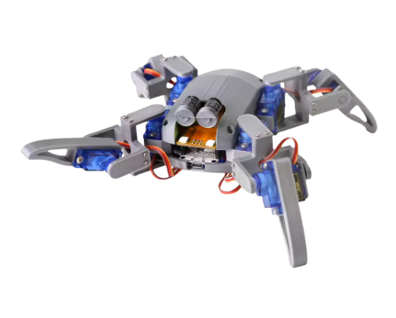
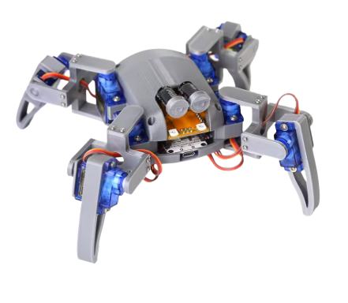
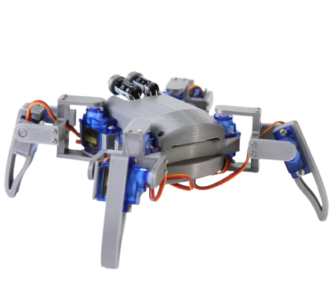
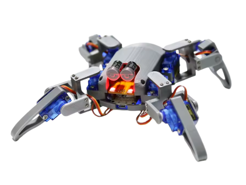

Robótica
Estudo da estrutura mecânica, dos servomotores e dos movimentos das quatro patas.
Robô aranha de 4 patas com 8 servos e ESP8266.

O Spider Bot é um projeto de robótica que utiliza uma estrutura quadrúpede, servomotores e um microcontrolador ESP8266 para executar movimentos coordenados. Esta página reúne informações sobre os componentes, a montagem, o funcionamento e o código utilizado no robô.
Estudo da estrutura mecânica, dos servomotores e dos movimentos das quatro patas.
Organização das funções responsáveis pelos movimentos e comandos do robô.
Registro dos componentes, das etapas de montagem e do funcionamento do sistema.


Conheça os principais elementos envolvidos na construção do Spider Bot. As especificações finais devem ser conferidas na documentação do kit recebido.
Microcontrolador utilizado para executar o programa e permitir recursos de conectividade sem fio, conforme a configuração do kit.
O projeto é apresentado com oito servos, responsáveis por movimentar as articulações das quatro patas.
Peças que formam o corpo, as articulações e os apoios do robô.
Cabos, conexões e fonte de alimentação necessários ao funcionamento seguro do conjunto, de acordo com o manual.
A montagem será documentada por etapas, com fotos reais, observações e orientações baseadas no manual do fabricante.
Identifique os componentes recebidos e confira se estão de acordo com a lista do kit.
Monte o corpo e as articulações seguindo a ordem indicada nas instruções oficiais.
Posicione e fixe os servomotores conforme a orientação e a posição inicial recomendadas pelo fabricante.
Confira a fiação e a alimentação antes de executar os testes iniciais do programa.
No firmware v2.0, o ESP8266 cria uma rede Wi-Fi própria chamada Spider Robot (senha 12345678) e sobe um servidor web no endereço 192.168.4.1. Cada botão da página de controle envia ao robô uma requisição HTTP do tipo GET, e o firmware executa o movimento correspondente.
A requisição /controller?pm=N escolhe um dos 15
movimentos programados no firmware, como andar, girar, deitar
e dançar.
A requisição /controller?servo=ID&value=ÂNGULO
posiciona um servo (ID de 0 a 7) no ângulo informado. É usada
nas páginas de calibração.
O firmware não envia dados de sensores. O Gauge desta página mostra o ângulo definido na interface (demonstração), e não uma medição feita pelo robô.
| pm | Movimento (nome no firmware) | Tempo programado |
|---|---|---|
| 1 | Posição inicial (Standby) | 1,0 s |
| 2 | Andar para frente (Forward) | 2,2 s |
| 3 | Andar para trás (Backward) | 2,2 s |
| 4 | Deslocar para a esquerda (Left shift) | 2,2 s |
| 5 | Deslocar para a direita (Right shift) | 2,2 s |
| 6 | Girar para a esquerda (Turn left) | 1,6 s |
| 7 | Girar para a direita (Turn right) | 1,6 s |
| 8 | Deitar (Lie) | 0,5 s |
| pm | Movimento (nome no firmware) | Tempo programado |
|---|---|---|
| 9 | Cumprimentar (Say Hi) | 3,8 s |
| 10 | Postura de luta (Fighting) | 5,5 s |
| 11 | Flexão (Push up) | 9,6 s |
| 12 | Dormir (Sleep) | 2,0 s |
| 13 | Dança 1 | 4,0 s |
| 14 | Dança 2 | 3,6 s |
| 15 | Dança 3 | 4,0 s |
Os tempos são a soma dos passos programados nas matrizes de movimento do firmware (nos casos 9 e 12 incluem o movimento extra executado junto). Também existem o pm 99 (posição central dos servos) e o pm 100 (posição zero, usada na calibração).
O Gauge mostra o ângulo definido nesta interface para um servo (de 1 a 180, a faixa usada pelo firmware). É uma demonstração: ele não envia comandos ao robô e não representa uma medição feita pelo firmware. Cada registro é gravado no banco de dados com o servo, o ângulo e a data e hora.
| # | Servo | Ângulo | Data e hora |
|---|---|---|---|
| Nenhum registro carregado. | |||
Com o dispositivo conectado à rede Wi-Fi Spider Robot, abra a página de controle que o próprio robô disponibiliza.
Abrir painel do robôA rede do robô não tem acesso à internet, então alguns aparelhos avisam "sem internet". Mantenha a conexão com a rede do robô para o painel abrir.
O firmware v2.0 usa as bibliotecas Servo,
EEPROM, ESP8266WiFi,
ESP8266WebServer e Adafruit_NeoPixel
(olhos de LED). Os trechos abaixo foram simplificados para leitura,
mas seguem o código original.
Liga a serial, os LEDs dos olhos e os servos, cria o ponto de acesso Wi-Fi Spider Robot e inicia a EEPROM e o servidor web.
Executa uma matriz de passos, calculando posições intermediárias a cada 10 ms para o movimento ficar suave.
Recebe o parâmetro pm ou o par servo e value enviados pela interface.
Cada movimento é uma matriz com 9 colunas: o ângulo
dos 8 servos (ALLSERVOS = 8) e o tempo do passo em
milissegundos. O valor de cada ângulo vai de 1 a 180
(PWMRES_Min e PWMRES_Max) e é convertido
para a faixa de 400 a 2400 (SERVOMIN e
SERVOMAX). A base de tempo é BASEDELAYTIME = 10 ms.
Envia um ângulo a um servo. Antes, soma a correção de calibração guardada na EEPROM para aquele servo.
void Set_PWM_to_Servo(int iServo, int iValue)
{
int NewPWM = iValue + (int8_t)EEPROM.read(iServo);
NewPWM = map(NewPWM, PWMRES_Min, PWMRES_Max, SERVOMIN, SERVOMAX);
if (iServo >= 7) {
GPIO2SERVO.write(NewPWM);
} else if (iServo >= 6) {
GPIO4SERVO.write(NewPWM);
}
// ... o mesmo padrão continua até o servo 0
}
Percorre os passos da matriz. Em cada passo, repete a cada 10 ms o
cálculo da posição intermediária entre a posição atual e a posição
alvo de cada servo, e chama Set_PWM_to_Servo().
void Servo_PROGRAM_Run(int iMatrix[][ALLMATRIX], int iSteps)
{
int INT_TEMP_A, INT_TEMP_B, INT_TEMP_C;
for (int MainLoopIndex = 0; MainLoopIndex < iSteps; MainLoopIndex++) {
int InterTotalTime = iMatrix[MainLoopIndex][ALLMATRIX - 1];
int InterDelayCounter = InterTotalTime / BASEDELAYTIME;
for (int InterStepLoop = 0; InterStepLoop < InterDelayCounter; InterStepLoop++) {
for (int ServoIndex = 0; ServoIndex < ALLSERVOS; ServoIndex++) {
INT_TEMP_A = Running_Servo_POS[ServoIndex]; // posição atual
INT_TEMP_B = iMatrix[MainLoopIndex][ServoIndex]; // posição alvo
if (INT_TEMP_A == INT_TEMP_B) {
INT_TEMP_C = INT_TEMP_B;
} else if (INT_TEMP_A > INT_TEMP_B) {
// ... valor diminui: mesma lógica, subtraindo
} else if (INT_TEMP_A < INT_TEMP_B) {
INT_TEMP_C = map(BASEDELAYTIME * InterStepLoop, 0, InterTotalTime, 0, INT_TEMP_B - INT_TEMP_A);
if (INT_TEMP_A + INT_TEMP_C <= INT_TEMP_B) {
Set_PWM_to_Servo(ServoIndex, INT_TEMP_A + INT_TEMP_C);
}
}
}
delay(BASEDELAYTIME);
}
// ... guarda a posição atual para o próximo passo
}
}
Rota /controller do servidor web. Guarda o movimento
pedido em Servo_PROGRAM ou posiciona um servo
diretamente, e responde à interface.
void handleController()
{
String pm = server.arg("pm");
String servo = server.arg("servo");
if (pm != "") {
Servo_PROGRAM = pm.toInt();
}
if (servo != "") {
GPIO_ID = servo.toInt();
String ival = server.arg("value");
Set_PWM_to_Servo(GPIO_ID, ival.toInt());
}
server.send(200, "text/html", "(pm)=(" + pm + ")");
}
Atende o servidor web. Se um movimento foi pedido, executa o caso
correspondente (a cor dos olhos também muda) e zera
Servo_PROGRAM. Sem movimento pedido, os olhos fazem o
efeito de respiração com Breath().
void loop(void)
{
server.handleClient();
if (Servo_PROGRAM >= 1) {
switch (Servo_PROGRAM) {
case 2: // Forward
// ... define a cor dos olhos (LEDs)
Servo_PROGRAM_Run(Servo_Prg_2, Servo_Prg_2_Step);
break;
// ... demais casos, de 1 a 15
case 99:
Servo_PROGRAM_Center();
delay(300);
break;
case 100:
Servo_PROGRAM_Zero();
delay(300);
break;
}
Servo_PROGRAM = 0;
} else {
Breath();
}
}| Rota | Função no firmware |
|---|---|
| / | Página principal com os botões de controle |
| /controller | Executa um movimento (pm) ou posiciona um servo (servo e value) |
| /save | Grava na EEPROM a correção de calibração de um servo |
| /zero | Página para posicionar os servos na calibração |
| /setting | Página de ajuste dos valores de correção |
| /editor | Página para montar e testar movimentos |
| /online | Executa um quadro de movimento com 8 ângulos e um tempo |
firmware.ino v2.0 fornecido
com o kit, com comentários e partes repetitivas resumidos. O código
completo e o esquema elétrico estão nos links oficiais abaixo.
Lista dos requisitos funcionais e não funcionais do site e do aplicativo. Os requisitos podem ser ajustados conforme as orientações da disciplina.
| Código | Requisito | Situação |
|---|---|---|
| RF01 | Apresentar as informações do projeto | Implementado |
| RF02 | Apresentar os componentes do kit | Implementado |
| RF03 | Apresentar as etapas de montagem | Em desenvolvimento |
| RF04 | Documentar os comandos e as rotas do firmware | Implementado |
| RF05 | Documentar as funções do código Arduino com trechos de código | Implementado |
| RF06 | Exibir um Gauge com o ângulo definido na interface | Implementado |
| RF07 | Gravar no PostgreSQL o servo, o ângulo e a data e hora | Implementado |
| RF08 | Listar os registros mais recentes | Implementado |
| RF09 | Informar falhas de comunicação com o backend, sem simular sucesso | Implementado |
| RF10 | Oferecer acesso ao painel do robô em 192.168.4.1 | Aguardando teste com o robô |
| RF11 | Disponibilizar o app Spider Bot Control para controle pelo celular | Em desenvolvimento |
| Código | Requisito | Situação |
|---|---|---|
| RNF01 | Interface responsiva | Implementado |
| RNF02 | Foco visível e respeito ao movimento reduzido | Implementado |
| RNF03 | Dados armazenados em PostgreSQL (Neon) | Implementado |
| RNF04 | API REST com troca de dados em JSON | Implementado |
| RNF05 | Validação no servidor e no banco (servo de 0 a 7, ângulo de 1 a 180) | Implementado |
| RNF06 | Consultas parametrizadas | Implementado |
| RNF07 | Credenciais fora do repositório, em variáveis de ambiente | Implementado |
| RNF08 | CORS restrito às origens configuradas | Implementado |
| RNF09 | Controle local, sem internet, pela rede do próprio robô | Aguardando teste com o robô |
O Spider Bot Control é a interface dedicada ao controle do robô por dispositivos móveis. O aplicativo será disponibilizado como uma Progressive Web App (PWA), permitindo sua instalação em dispositivos compatíveis.
Acesse a interface de controle para acompanhar as funcionalidades implementadas e enviar comandos ao Spider Bot, conforme a comunicação suportada pelo firmware.
Acessar Spider Bot ControlPara controlar o robô, o dispositivo deverá atender aos requisitos de conexão e comunicação definidos pelo firmware.
